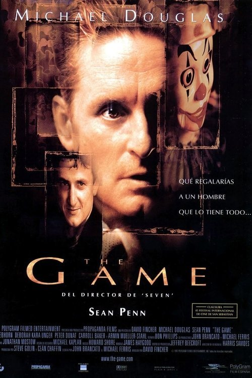

The Game (1997)

Plataforma: Netflix
Puntuación IMDb: 7.8/10
Duración: 2h 10m
Género: Thriller Psicológico
Sinopsis Rápida
¿Qué pasaría si tu vida se convirtiera en un juego mortal, donde la realidad y la ficción se desdibujan hasta el límite?
Sinopsis Detallada
{{SINOPSIS_EXTENDIDA}}
¿Por qué tenés que verla?
- Una trama inteligente y retorcida que te mantendrá adivinando hasta el final.
- La dirección maestra de David Fincher crea una atmósfera oscura y opresiva.
- Su influencia en el cine de suspense y thrillers posteriores es innegable.
- Excelente actuación de Michael Douglas.
Idea Extra
Análisis de las múltiples capas de la trama y sus posibles interpretaciones.